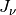
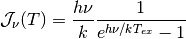
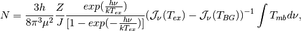

LTE¶
Functions to calculate LTE column densities.
TODO: Add Documentation.
-
astrolyze.lte.lte.calc_N(molecule, excitation_temperature, J, W)[source] Calculates the column density for a molecule. !!! LOOK into the remaining Code and merge!!!
-
astrolyze.lte.lte.calc_excitation_temperature(Tb, nu)[source] Calculation of the excitation temperature of an optically thick 12CO line under the assumption of LTE.
Parameters: Tb –
-
astrolyze.lte.lte.calc_jnu(nu, T)[source] Calculates  needed for lte_column_density.
Parameters: - nu (float) – Frequency
- T (float) – Temperature
Notes
The formula (in cgs units) implemented here is:

where:
- k: the Boltzman constant in CGS
- h: the PLanck constant in CGS
 : the frequency
: the frequency- T: exitation temperature
References
Mike Zielinsky
-
astrolyze.lte.lte.lte_column_density(nu, Tmb, excitation_temperature, J, Z, mu)[source] This function calculates the Column densities of linear molecules
Units are all to be given in cgs Z is the array of partition function values for the corresponding temperatures in T these are the log values of Z
Notes
The implemented formula, taken from Doktorarbeit is:

- where:
- k: the Boltzman constant in CGS
- h: the PLanck constant in CGS
- W: integrated Intensity in Kelvin cm/s
- Aul: the Einstein coeffiecient of the transition
- gu: the statistical Weight of the upper level
- Eu: the Energy of the upper level
- exitation_temperature
- Z: the partition Function
References
add reference to Zielinsky
Warning
Extend documentation!!!!
This script generates a dictionary storing the information of molecular transitions.
-
class
astrolyze.lte.molecule_parameter.Molecule(nu, Q, T, Eu, Aul, gu, mu, name='')[source] A class holding attributes that define the characteristics of an individual tansition of a molecules.
The
astrolyze.functions.astro_functions.calc_N()routine depends on this class.Parameters: - nu (float) –
- Q (list) – The partition function of the molecule evaluated at discreet temperatures. Given in T.
- T (list) – The temperatures at which the partition functions was evaluated. The value of Q used finally is interpolated to the excitation_temperature give.
- Eu (float) – Energy of the upper state of the transition.
- Aul (float) – The Einstein coefficient. For the transition of upper-to-lower state.
- gu (float) – ADD DESCRIPTION.
- mu (float) – ADD DESCRIPTION.
- name (string) – The name of the molecule.